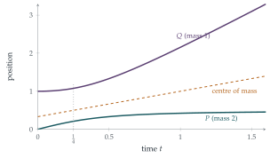

STEP III 2004, Question 11
Read the question before you go on. It is in the STEP Support Programme’s question database: step.maths.org/questions/04-s3-q11
The hook
Two bodies attract or repel each other: the Earth and the Moon, two stars, a proton and an electron. Each body’s motion depends on where the other one is, so the equations are coupled, and it looks as if both motions must be found at once. Newton’s great simplification was to change variables. Instead of the two positions, use the centre of mass, which moves as if no forces acted at all, and the separation, which moves like a single particle with a modified mass. One hard problem becomes two easy ones.
This question carries out that separation for two particles on a line. Along the way there is a small miracle: the separation turns out to be the square root of a quadratic in \(t\), for a reason that has nothing to do with the question as set and everything to do with motion in a plane.
Before you start
Write down Newton’s second law for each particle. In which direction does each force act?
The force is repulsive, so it pushes \(P\) (on the left) to the left and \(Q\) (on the right) to the right: \[2\ddot x_1 = -\frac{2}{z^3}, \qquad 1 \cdot \ddot x_2 = +\frac{2}{z^3}.\] These are coupled, because each involves \(z = x_2 - x_1\).
Working it through
Stage 1 The separation
Which combination of the two equations involves only \(z\)?
Subtract: \(\ddot z = \ddot x_2 - \ddot x_1 = \frac{2}{z^3} + \frac{1}{z^3} = \frac{3}{z^3}\).■
The separation behaves like a single particle of mass \(\frac23\) pushed by the force \(\frac{2}{z^3}\). The number \(\frac23 = \frac{2 \times 1}{2 + 1}\) is the reduced mass \(\frac{m_1m_2}{m_1 + m_2}\).
Stage 2 Energy for the separation
With \(\ddot z = v\frac{\mathrm{d}v}{\mathrm{d}z}\), separate the variables and integrate. What are the initial values of \(z\) and \(v = \dot z\)?
From \(v\frac{\mathrm{d}v}{\mathrm{d}z} = \frac{3}{z^3}\), integrating gives \(\frac12v^2 = -\frac{3}{2z^2} + C\). Initially \(z = 1\) and \(\dot z = \dot x_2 - \dot x_1 = 0 - 1 = -1\), so \(\frac12 = -\frac32 + C\), giving \(C = 2\): \[v^2 = 4 - \frac{3}{z^2}.\] (This is conservation of energy for the separation: kinetic energy plus potential energy \(\frac{3}{2z^2}\) per unit reduced mass is constant.)
Stage 3 A surprisingly simple solution
The answer to show is \(z^2 = 4t^2 - 2t + 1\). So look at \(w = z^2\) instead of \(z\). What is \(\dot w^2\) in terms of \(w\)?
With \(w = z^2\), \(\dot w = 2z\dot z\), so \[\dot w^2 = 4z^2\dot z^2 = 4z^2\Bigl(4 - \frac{3}{z^2}\Bigr) = 16w - 12.\] Differentiating, \(2\dot w\ddot w = 16\dot w\), so (whenever \(\dot w \neq 0\)) \(\ddot w = 8\). Hence \(w\) is a quadratic in \(t\): \(w = 4t^2 + \alpha t + \beta\). Initially \(w = 1\) and \(\dot w = 2z\dot z = -2\), so \(\beta = 1\) and \(\alpha = -2\): \[z = \sqrt{4t^2 - 2t + 1}. \qed\] (You can check directly: \(\dot w^2 = (8t - 2)^2 = 64t^2 - 32t + 4 = 16(4t^2 - 2t + 1) - 12\).) The particles come closest at \(t = \frac14\), when \(z = \frac{\sqrt3}{2}\), and then separate for ever.
Stage 4 The centre of mass
What equation does \(2x_1 + x_2\) satisfy? Why is it the natural combination to look at?
Adding the two equations of motion, \(2\ddot x_1 + \ddot x_2 = -\frac{2}{z^3} + \frac{2}{z^3} = 0\). The forces are equal and opposite (Newton’s third law), so the total momentum \(2\dot x_1 + \dot x_2\) is constant. It starts at \(2 \times 1 + 0 = 2\), and \(2x_1 + x_2\) starts at \(1\), so \[2x_1 + x_2 = 1 + 2t.\] The centre of mass, at \(\frac{2x_1 + x_2}{3}\), moves steadily at speed \(\frac23\). Combining with \(x_2 - x_1 = z\), \[x_1 = \frac{1 + 2t - \sqrt{4t^2 - 2t + 1}}{3}, \qquad x_2 = \frac{1 + 2t + 2\sqrt{4t^2 - 2t + 1}}{3}. \qed\]

Looking back
Decouple by changing variables. The difference of the equations involved only \(z\); the weighted sum involved only the centre of mass.
Energy integral. Writing \(\ddot z = v\frac{\mathrm{d}v}{\mathrm{d}z}\) turned a second-order equation into a first-order one: conservation of energy.
Change the unknown. The equation for \(z\) was awkward; the equation for \(z^2\) was trivial.
What’s really going on
Why \(z^2\) is quadratic
For any force law of the form \(\ddot z = k/z^3\), the same calculation gives \(\frac{\mathrm{d}^2}{\mathrm{d}t^2}(z^2) = 2\dot z^2 + 2z\ddot z = 2\dot z^2 + \frac{2k}{z^2} =\) constant, since \(\frac12\dot z^2 + \frac{k}{2z^2}\) is the conserved energy. So \(z^2\) is always a quadratic in \(t\). Why?
Here is the hidden reason. Think of a particle moving freely, in a straight line at constant speed, in a plane. Its distance \(r\) from the origin satisfies \(r^2 = (\text{a quadratic in } t)\), since \(r^2 = (x_0 + at)^2 + (y_0 + bt)^2\). And in polar coordinates its radial equation of motion is \(\ddot r - r\dot\theta^2 = 0\); with the angular momentum \(h = r^2\dot\theta\) constant, that becomes \[\ddot r = \frac{h^2}{r^3}.\] The inverse-cube repulsion is exactly the centrifugal effect of the hidden angular motion. In our problem, \(z^2 = 4t^2 - 2t + 1 = (2t - \frac12)^2 + \frac34\) is the squared distance from the origin of a point moving at speed \(2\) along a straight line that passes the origin at distance \(\frac{\sqrt3}{2}\). The one-dimensional repelling particles are the shadow of free motion in two dimensions.
The two-body problem
The method of this question works for any force between two bodies that depends only on their separation and acts along the line between them, in three dimensions as well as one. The centre of mass moves uniformly, and the separation vector \(\mathbf{r}\) obeys \(\mu\ddot{\mathbf{r}} = \mathbf{F}(\mathbf{r})\), with \(\mu = \frac{m_1m_2}{m_1 + m_2}\). For gravity this is the Kepler problem, solved by Newton in the Principia: the separation traces an ellipse, parabola or hyperbola. The Earth and the Sun both orbit their common centre of mass, which lies inside the Sun; the Earth and the Moon orbit a point about \(4700\) km from the Earth’s centre, inside the Earth but well away from its centre, which is why the Earth wobbles monthly. Astronomers find planets round other stars by detecting exactly this wobble in the star.
In 1969 Francesco Calogero studied many particles on a line repelling each other with inverse-square potentials (that is, inverse-cube forces), and found that, remarkably, the system can be solved exactly for any number of particles. Jürgen Moser explained the reason in 1975, using a matrix whose eigenvalues stay constant as it evolves: the Lax pairs of Section 7.7. The Calogero–Moser system is now a central example of an integrable system, a system with enough conserved quantities to be solved completely, and it connects mechanics with random matrices, quantum field theory and the theory of solitons.
The thinking skill
When two quantities are coupled, look for combinations that are not. Sums and differences, weighted by the right constants, often separate a problem into independent pieces.
Centre of mass and relative coordinates are the first example. At university the same idea appears as diagonalising a matrix (normal modes, Section 11.2), as separation of variables for partial differential equations, and in quantum mechanics.
Try this next
Two masses on a string. Try STEP III 2023, Question 9 (in OCR’s download of the 2023 papers, a zip file). It follows two particles joined by a string, using the centre of mass to separate the motion. Look for when one particle moves backwards.
Attraction. Repeat the question with an attractive force \(\frac{2}{z^3}\). Show that \(z^2\) is still a quadratic in \(t\), and find when the particles collide.
The hidden plane. For the motion in the question, find the straight line in the plane whose distance from the origin is \(z(t)\), and the angle \(\theta(t)\) swept out. Check that \(z^2\dot\theta\) is constant and that \((z^2\dot\theta)^2 = 3\).
Kepler’s third law. Two stars of masses \(m_1\) and \(m_2\) move in circles about their centre of mass, a distance \(a\) apart, under gravity. Show that the period \(T\) satisfies \(T^2 = \frac{4\pi^2a^3}{G(m_1 + m_2)}\).
Further reading
John Taylor, Classical Mechanics (University Science Books), Chapter 8. The two-body problem, reduced mass and orbits.
Daniel Kleppner & Robert Kolenkow, An Introduction to Mechanics (Cambridge University Press), Chapter 10, on central forces.
Francesco Calogero, Classical Many-Body Problems Amenable to Exact Treatments (Springer). For the ambitious: the world of exactly solvable systems.